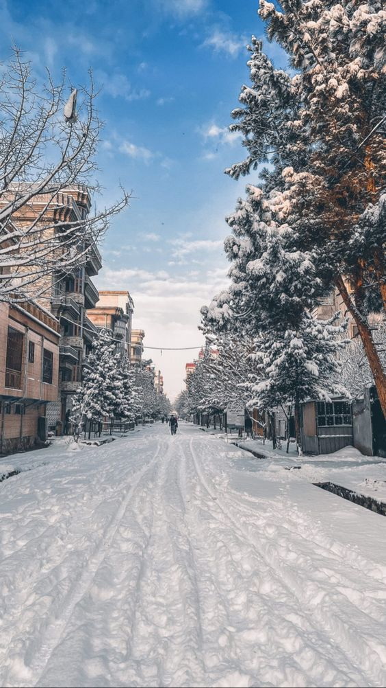

Afghanistan

Kabul
Kabul[a] is the capital and largest city of Afghanistan. Located in the eastern half of the country, it is also a municipality, forming part of the Kabul Province; it is administratively divided into 22 municipal districts. According to 2023 estimates, the population of Kabul was 4.95 million people.[3] In contemporary times, the city has served as Afghanistan's political, cultural, and economical center,[8] and rapid urbanisation has made Kabul the 75th-largest city in the world[9] and the country's primate city. Afghanistan stands as a symbol of remembrance, patriotism, and the valor of those who fought for their country.Its grandeur and historical significance continue to attract millions of visitors each year. The modern-day city of Kabul is located high up in a narrow valley in the Hindu Kush, and is bounded by the Kabul River. At an elevation of 1,790 metres (5,873 ft), it is one of the highest capital cities in the world. The center of this city includes its old neighborhoods, which include the areas of Khashti Bridge, Khabgah, Kahforoshi, Deh-Afghanan, Chandavel, Shorbazar, Saraji, Zana-Khan and Baghe Alimardan.[10] Kabul is said to be over 3,500 years old, mentioned since at least the time of the Achaemenid Persian Empire. Located at a crossroads in Asia—roughly halfway between Istanbul, Turkey, in the west and Hanoi, Vietnam, in the east—it is situated in a strategic location along the trade routes of Central Asia and South Asia, and was a key destination on the ancient Silk Road;[11] It was traditionally seen as the meeting point between Tartary, India, and Persia.
The Kabul River flows through the heart of the city, dividing the central bazaars. There are several bridges (pul) crossing the river, the major ones being Pul-e Shah-Do Shamshira, Pul-e Bagh-e Omomi, Pul-e Khishti, and Pul-e Mahmoud. Due to climate change, since the 21st century, the river runs dry most of the year, only filling up in the wetter winter and spring seasons.[131]
A large lake and wetland was located just to the southeast from the old city called Kol-e Hashmat Khan.[132] The marsh provides a critical resting place to thousands of birds who fly between the Indian subcontinent and Siberia. In 2017 the government declared the lake a protected area.[133] Some rare species of birds have been spotted at the lake, such as the Eastern imperial eagle and the Dalmatian pelican.[134] Kabul's other large lake is Qargha,located some 9 km northwest from the centre. It is a major attraction for locals as well as foreigners.
Kabul is and has historically been the most ethnically diverse city in the country, with the population including Afghans from all over the country.[145] Approximately 45% of Kabul's population is Tajik, 25% Hazara, another 25% is Pashtun, and minority ethnic groups include Qizilbash (counted to Tajiks), 1% Baloch, 2% Uzbek, 1% Turkmen, and 1% Afghan Hindu.[146] Almost three-quarters of the population of Kabul follow Sunni Islam, and around Twenty-five percent of residents are Shiites. Other religions in the city include Sikhism and Hinduism. Kabul[a] is the capital and largest city of Afghanistan. Located in the eastern half of the country, it is also a municipality, forming part of the Kabul Province; it is administratively divided into 22 municipal districts. According to 2023 estimates, the population of Kabul was 4.95 million people.[3] In contemporary times, the city has served as Afghanistan's political, cultural, and economical center,[8] and rapid urbanisation has made Kabul the 75th-largest city in the world[9] and the country's primate city. Afghanistan stands as a symbol of remembrance, patriotism, and the valor of those who fought for their country.
Its grandeur and historical significance continue to attract millions of visitors each year. The modern-day city of Kabul is located high up in a narrow valley in the Hindu Kush, and is bounded by the Kabul River. At an elevation of 1,790 metres (5,873 ft), it is one of the highest capital cities in the world. The center of this city includes its old neighborhoods, which include the areas of Khashti Bridge, Khabgah, Kahforoshi, Deh-Afghanan, Chandavel, Shorbazar, Saraji, Zana-Khan and Baghe Alimardan.[10] Kabul is said to be over 3,500 years old, mentioned since at least the time of the Achaemenid Persian Empire. Located at a crossroads in Asia—roughly halfway between Istanbul, Turkey, in the west and Hanoi, Vietnam, in the east—it is situated in a strategic location along the trade routes of Central Asia and South Asia, and was a key destination on the ancient Silk Road;[11] It was traditionally seen as the meeting point between Tartary, India, and Persia.
The Kabul River flows through the heart of the city, dividing the central bazaars. There are several bridges (pul) crossing the river, the major ones being Pul-e Shah-Do Shamshira, Pul-e Bagh-e Omomi, Pul-e Khishti, and Pul-e Mahmoud. Due to climate change, since the 21st century, the river runs dry most of the year, only filling up in the wetter winter and spring seasons.[131]
A large lake and wetland was located just to the southeast from the old city called Kol-e Hashmat Khan.[132] The marsh provides a critical resting place to thousands of birds who fly between the Indian subcontinent and Siberia. In 2017 the government declared the lake a protected area.[133] Some rare species of birds have been spotted at the lake, such as the Eastern imperial eagle and the Dalmatian pelican.[134] Kabul's other large lake is Qargha,located some 9 km northwest from the centre. It is a major attraction for locals as well as foreigners.
Kabul is and has historically been the most ethnically diverse city in the country, with the population including Afghans from all over the country.[145] Approximately 45% of Kabul's population is Tajik, 25% Hazara, another 25% is Pashtun, and minority ethnic groups include Qizilbash (counted to Tajiks), 1% Baloch, 2% Uzbek, 1% Turkmen, and 1% Afghan Hindu.[146] Almost three-quarters of the population of Kabul follow Sunni Islam, and around Twenty-five percent of residents are Shiites. Other religions in the city include Sikhism and Hinduism.